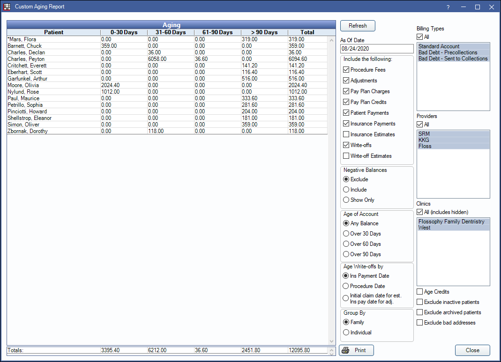
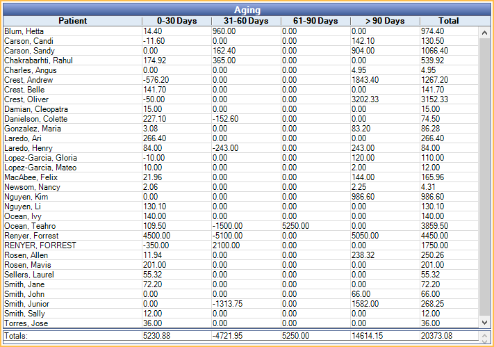

Custom Aging Report
The Custom Aging report allows users to customize which transactions to age.
In Standard Reports, in the Monthly area, click Custom Aging.
The default criteria settings match the Aging of Accounts Receivable (A/R) Report. Aging can be run as of a historical date (see As Of Date).
 Watch the Webinar: Aging of Accounts Receivable (A/R)
Watch the Webinar: Aging of Accounts Receivable (A/R)
- To control user access to this report, see Report Setup: Security Permissions.
- This report is available by default to users with the Aging of AR permission.
- The Pay Plan defaults depend on settings found in Preferences, Pay Plan Logic section.
Customize the Report
Select criteria and filters to customize the report. Selected criteria may affect the calculated balances.
As Of Date: Enter a date from which to begin calculating aging. Default is today.
Include the following: Check criteria boxes to include in the aging report calculations. Checking or unchecking options will affect balance calculations.
- Procedure Fees: Include procedure fees.
- Adjustments: Include adjustments.
- Pay Plan Charges: Include pay plan charges in the aged amounts.
- Pay Plan Credits: Include pay plan credits in the aged amounts. See Payment Plan Procedures and Credits.
- Patient Payments: Include patient payments.
- Insurance Payments: Include insurance payments.
- Insurance Estimates: Include insurance estimates.
- Write-offs: Include write-offs. Must be checked to show Capitation write-offs.
- Write-off Estimates: Include write-off estimates.
Negative Balances: Choose whether accounts with negative balances are included in the report.
- Exclude: Check this box to exclude accounts with negative balances.
- Include: Check this box to include accounts negative balances.
- Show Only: Check this box to only show accounts with negative balances.
Age of Account: Only show accounts aged over the selected value.
- Any Balance: Include patients with any balance due regardless of age.
- Over 30 Days: Include patients with balances that are over 30 days due.
- Over 60 Days: Include patients with balances that are over 60 days due.
- Over 90 Days: Include all patients with balances that are over 90 days due.
Age Write-offs by: Calculate write-offs by insurance payment date, procedure date or using the initial claim date for estimates and insurance pay date for adjustment. The default is determined by the Default to using Proc Date for PPO write-offs preference in Reports Setup.
Group By: Select how to group calculation amounts.
- Family: Group by family, listed by name of guarantor.
- Individual: Group by individual patient.
Billing Types: Check All to include all billing types, or select individual billing types to include.
Providers: Select the providers to include. Ctrl + click to select multiple providers or check All to include all listed providers..
- When Group By is set to Family, filters by Primary Provider of any family member with a balance.
- When Group By is set to Individual, filters by patient's Primary Provider.
Clinics: Select clinics to include in the report. Ctrl + click to select multiple clinics or check All (includes hidden) to include all clinics, including those marked hidden.
- When Group By is set to Family, filters by clinic assigned to any family member with a balance.
- When Group By is set to Individual, filters by patient's assigned clinic.
- If user is restricted to specific clinics, only accessible clinics will list. When checking All (includes hidden), results will include all clinics user has access to, including those marked hidden, and anything unassigned to a clinic; results do not include clinics user is restricted from.
Age Credits: Age credits in increments of 0-30, 31-60, 61-90, and 90+ instead of aging credits using standard calculation (applying credits to oldest charges first).
Exclude Inactive Patients: Check to exclude all patients with an inactive status.
Exclude Archived Patients: Check to exclude all patients with an archived status.
Exclude Bad Addresses: Check to exclude patients with no zip code.
Aging
Click Refresh to generate the report based on the selected customization options. The Aging grid displays results matching the selected criteria. Click Print to generate a print preview of the report.
Descriptions of each column in the grid are below.
- Patient: Last name and first name of patient (when grouped by individual) or guarantor (when grouped by family).
- 0-30 Days: Balance amount that is up to 30 days past due.
- 31-60 Days: The balance that is 31-60 days past due.
- 61-90 Days: The balance that is 61-90 days past due.
- > 90 Days: The balance that is greater than 90 days past due.
- Total: Total balance due in all aging categories.
Totals for all account balances included in the grid are shown at the bottom of the window.